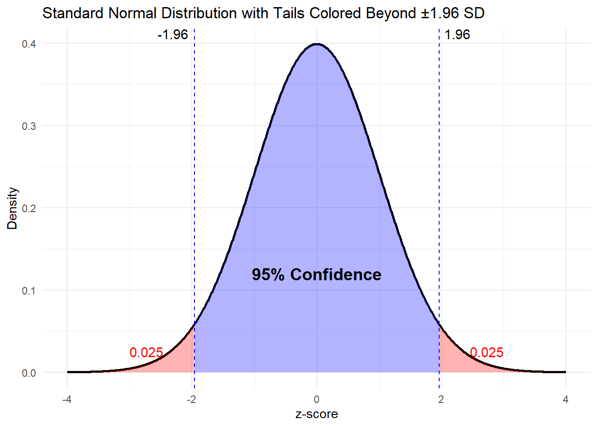

Confidence Intervals for a Mean
Introduction
Lesson Outcomes
By the end of this lesson, you should be able to:
- Explain the meaning of a level of confidence
- Create a confidence interval for a single mean with \(\sigma\) known using the following steps:
- Find the point estimate (\(\bar{x}\))
- Calculate the margin of error for the given level of confidence
- Calculate a confidence interval from the point estimate and the margin of error
- Interpret the confidence interval
- Check the requirements for the confidence interval
- Explain how the margin of error is affected by the sample size and level of confidence
Statistical Inference is the practice of using data sampled from a population to make conclusions about population parameters.
The two primary methods of statistical inference are:
- Hypothesis Testing
- Confidence Intervals
This chapter lays the foundation for confidence intervals.
Background
Point Estimators
We have learned about several statistics. Remember, a statistic is any number computed based on data. The sample statistics we have discussed are used to estimate population parameters.
|
Sample Statistic |
Population Parameter |
|
|---|---|---|
|
Mean |
\(\bar x\) |
\(\mu\) |
|
Standard Deviation |
\(s\) |
\(\sigma\) |
|
Variance |
\(s^2\) |
\(\sigma^2\) |
|
\(\vdots\) |
\(\vdots\) |
\(\vdots\) |
The statistics above are called point estimators because they are just one number (one point on a number line) that is used to estimate a parameter. Parameters are generally unknown values. Think about the mean. If \(\mu\) is unknown, how do we know if \(\bar{x}\) is close to it?
The short answer is that we will never know for sure if \(\bar{x}\) is close to \(\mu\). This does not mean that we are helpless. The normal distribution provides a way for us to create a range of plausible values for a parameter (e.g. \(\mu\)) based on a statistic (e.g. \(\bar{x}\)).
Review: Distribution of Sample Means
Confidence intervals rely on the validity of the assumption that the distribution of the sample mean is normally distributed.
Recall that the distribution of sample means is normal when:
- The underlying population is normally distributed
- The sample size, n, is sufficiently large (\(n<30\) for this class) for the Central Limit Theorem to apply
Thought Question: If we have a good sample from a population and can trust that the sampling distribution of the mean is approximately normal, how frequently would a sample mean be within 2 standard deviations from the true population mean?
Remember, the standard deviation of \(\bar x\) is \(\frac{\sigma}{\sqrt{n}}\). For the variable \(\bar x\), two standard deviations would be equal to \(2 \frac{\sigma}{\sqrt{n}}\).
ANSWER: If we collect a random sample from a population and \(\bar x\) is normally distributed, then about 95% of the time the sample mean \(\bar x\) will be less than \(2 \frac{\sigma}{\sqrt{n}}\) units away from the population mean \(\mu\). Notice that this is true, whether or not we know \(\mu\).
This means the 95% of the time, we will get a sample mean within 2 Standard Deviations of the true population mean.
Flipping this around, if we take our sample mean and make an interval 2 standard deviations above the mean and 2 below, the interval will overlap with the true population mean about 95% of the time.
An Approximate 95% Confidence Interval
The equation of an approximate 95% confidence interval would be:
\[ CI = \bar{x} \pm 2 \frac{\sigma}{\sqrt{n}}\]
The part that we are adding and subtracting from our point estimate is called the Margin of Error. We use the letter \(m\) to denote the margin of error:
\[m = 2 \frac{\sigma}{\sqrt{n}}\]
Using this definition for \(m\), our confidence interval can be written as
\[( \bar x - m, ~ \bar x + m )\]
Confidence Intervals
Recall that it is only approximately 95% of the area under the curve within 2 standard deviations of the mean.
We want to be more precise in our confidence intervals and may want to choose a level of confidence different from 95%.
The generalized formula for a confidence interval is
\[ CI = \bar{x} \pm z^*\frac{\sigma}{\sqrt{n}}\]
Where \(z^*\) is a z-score value related to a specified level of confidence.
NOTE: The \(z^*\) value represents the value from a standard normal distribution beyond which
library(ggplot2)
x <- seq(-4, 4, length.out = 1000)
y <- dnorm(x)
x <- seq(-4, 4, length.out = 1000)
y <- dnorm(x)
# Create a data frame
data <- data.frame(x = x, y = y)
# Define critical value
crit_value <- 1.96
# Plot the distribution with shaded tails
ggplot(data, aes(x = x, y = y)) +
geom_line(color = "black", linewidth=1) +
geom_area(data = subset(data, x <= -crit_value), aes(x = x, y = y), fill = "red", alpha = 0.3) +
geom_area(data = subset(data, x >= crit_value), aes(x = x, y = y), fill = "red", alpha = 0.3) +
geom_area(data = subset(data, x >= -crit_value & x <= crit_value), aes(x = x, y = y), fill = "blue", alpha = 0.3) +
annotate("text", x = 0, y = 0.12, label = "95% Confidence", size = 5, fontface = "bold", color = "black") +
geom_vline(xintercept = c(-crit_value, crit_value), linetype = "dashed", color="blue") +
annotate("text", x = -crit_value, y = max(y), label = "-1.96", vjust = -0.5, hjust = 1.2, size = 4) +
annotate("text", x = crit_value, y = max(y), label = "1.96", vjust = -0.5, hjust = -0.2, size = 4) +
annotate("text", x = -3, y = 0.025, label = "0.025", color = "red", size = 4, hjust = 0) +
annotate("text", x = 3, y = 0.025, label = "0.025", color = "red", size = 4, hjust = 1) +
labs(title = "Standard Normal Distribution with Tails Colored Beyond ±1.96 SD",
x = "z-score", y = "Density") +
theme_minimal()
Common \(z^*\) values for specified confidence levels are:
| Conf. Level | Z* |
|---|---|
| 0.99 | 2.576 |
| 0.95 | 1.96 |
| 0.9 | 1.645 |
Confidence Level is related to the probability of a Type I error, \(\alpha\), in hypothesis testing. In fact, Confidence Level = 1-\(\alpha\).
A 95% confidence interval will miss the true population mean 5% of the time because 5% of the time you will get a mean in the one tail or the other of the sampling distribution just by chance.
Interpretation
Confidence intervals are typically reported using parentheses like: (lower limit, upper limit). We say that we are \(100*(1-\alpha)\%\) confident that the true population mean is between [lower limit] and [upper limit].
Average GRE Scores of BYU-I Students
The published population standard deviation of the quantitative portion of the Graduate Record Examination (GRE) scores is \(\sigma=8.3\).
Suppose we take a random sample of \(n=100\) BYU-I students who have taken the GRE and find that their average score was \(\bar{x}=162.1\)
We can calculate the 99% confidence interval:
\[ 162.1 \pm 2.576\frac{8.3}{\sqrt{100}} = (159.96, 164.24)\]
The interpretation of the above confidence interval would be:
I am 99% confident that the true population mean GRE score for BYU-I students is between 159.96 and 164.24.
Relationship to Hypothesis Testing
Consider that the published population mean for GRE test-takers if 158.
QUESTION: Does the true population mean of all test-takers fall inside our confidence interval?
Because 158 falls below our confidence interval, we conclude that BYU-I students score higher, on average, than the general population with 99% confidence.
Margin of Error
QUESTION: What happens to the margin of error, \(z^*\frac{\sigma}{\sqrt{n}}\), as the sample size increases?
QUESTION: What happens to the margin of error, \(z^*\frac{\sigma}{\sqrt{n}}\), as our confidence level increases? (see table above about Z* and confidence level)
Consider that if I make a wide enough interval, I can be 100% confident. But to get 100% confidence, my interval will be useless. For example, I can be 100% confident that the true population averge height of BYU-I students is between 2 feet and 100 feet. More confidence means we need a wider interval.